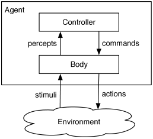

Face Recognition
Artificial Intelligence
What is Artificial Intelligence?
Artificial intelligence, or AI, is the field that studies the synthesis and analysis of computational agents that act intelligently. AI is all intelligence that is not biological. In AI, machines learn to copy people's actions and decisions. They reason logically, understand language, and learn from mistakes. AI is based on machine learning technology.
An agent is something that acts in an environment; it does something. Agents include worms, dogs, thermostats, airplanes, robots, humans, companies, and countries.
Face Recognition
Face Recognition is a category of biometric software that mathematically maps a person's facial features and stores the data as a face print. The software uses deep learning algorithms to compare a live recording or digital image to the stored facial image to verify a person's identity and much more.
Using Face Recognition API
You will be using the Face API JS library built on TensorFlow (TensorFlow is an end-to-end open source platform for machine learning) to setup the face detection. So make sure to download the library face-api.min.js - this is a simplified version of the Face API Library, and the models.
First, you would want to create a project folder. Where all your files will be stored in it. Then open your code editor and create an index.html page in the project folder. To start with your face recognition software, you will need to start the webcam in your browser and stream the footage in a video element in your HTML. To do that you would have to create a video element inside a div element. This div element will be the container of the video that will be used later in JavaScript.
<div class="video-container">
<video id="video" width="600" height="440" autoplay muted>
</video>
</div>
Create a style.css file in your project folder and link it with your HTML using the following code in the HTML head element.
<link rel="stylesheet" href="style.css">
Now it is time to give the project some styling. The following code will center the video container and the canvas and will put the canvas exactly on top of the container (the canvas will be created later in JavaScript).
.video-container {
width: 600px;
margin: 0 auto;
display: block;
position: relative;
margin-bottom: 0.5em;
}
.video-container canvas {
position: absolute;
top: 0;
left: 0;
right: 0;
bottom: 0;
}
The links that you downloaded at the beginning of the tutorial are the library (face-api.min.js) that you will use for the face detection, and the models that the face detection api will use to detect different facial features and predict the person's emotions. Don't forget to put the library (face-api.min.js) file and the models folder in your project folder.
Now create a script.js file in your project folder. Open this file to write some JavaScript. First, select the video element from the HTML.
const videoElement = document.getElementById("video");
Then you are going to load all the models, you have to promise all the models before starting the webcam.
Promise.all([
faceapi.nets.tinyFaceDetector.loadFromUri("/models"),
faceapi.nets.faceLandmark68Net.loadFromUri("/models"),
faceapi.nets.faceRecognitionNet.loadFromUri("/models"),
faceapi.nets.faceExpressionNet.loadFromUri("/models"),
faceapi.nets.ageGenderNet.loadFromUri("/models"),
]).then(startWebcam);
Starting the webcam
To start the webcam you will need to write a function that will access the user media and starts streaming a video in the video element.
function startWebcam() {
// request cam
navigator.mediaDevices
.getUserMedia({
video: true,
})
.then((stream) => {
// save stream to variable at top level so
// it can be stopped lateron
webcamStream = stream;
// show stream from the webcam on te
// video element
videoElement.srcObject = stream;
// returns a Promise to indicate if
// the video is playing
return videoElement.play();
})
.catch((e) => console.log("error: " + e));
}
After that, you are going to select the video container to create a canvas and append this canvas to the video container. This canvas will be used to visualize all the detections from a person's face. To do that you are going to add an eventListener to the video element that will fire when the video starts (play). In this eventListener, you will be detecting all of the available faces that are in front of the webcam. This will happen in an interval of 100 ms. So when you want to see all of the face detection results, you will find them in the const detections. You can console log it and build whatever you want with is. In my case, I will be using the results of age, gender, and emotions.
var videoContainer =document.querySelector(".video-container");
videoElement.addEventListener("play", () => {
const canvas = document.createElement("canvas");
videoContainer.append(canvas);
const displaySize = {
width: videoElement.width,
height: videoElement.height,
};
faceapi.matchDimensions(canvas, displaySize);
setInterval(async () => {
const detections = await faceapi
.detectAllFaces(videoElement,
new faceapi.TinyFaceDetectorOptions())
.withFaceLandmarks()
.withFaceExpressions()
.withAgeAndGender();
const resizedDetections
resizedDetections = faceapi.resizeResults(detections,
displaySize);
canvas.getContext("2d")
.clearRect(0, 0, canvas.width, canvas.height);
faceapi.draw.drawDetections(canvas, resizedDetections);
faceapi.draw.drawFaceLandmarks(canvas, resizedDetections);
faceapi.draw.drawFaceExpressions(canvas,resizedDetections);
resizedDetections.forEach((result) => {
const { age, gender, genderProbability } = result;
new faceapi.draw.DrawTextField(
[
`${faceapi.round(age, 0)} years`,
`${gender} (${faceapi.round(genderProbability)})`,
],
result.detection.box.bottomRight
).draw(canvas);
});
console.log(detections);
detections.forEach((person) => {
if (person.age && person.age < 16) {
console.log("age is under 16 years");
} else {
console.log("older than 16 years");
}
});
}, 100);
});
To make your life easier you can download an already made project folder project folder.
To learn more about the Face Detection API read the documentation.
You can check the project that I created with this API project, and see how I used the gender, age, and emotions to come up with new interaction methods for interacting with a website.